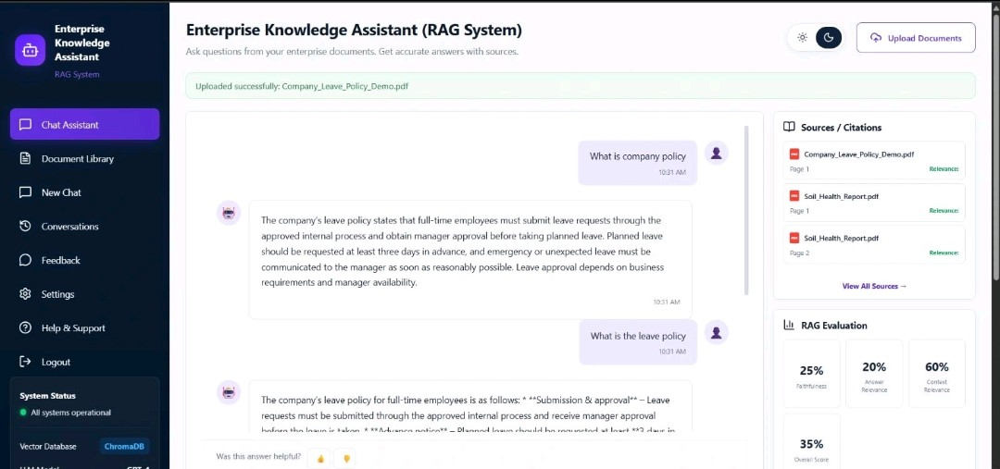

CASE STUDY · 03
ENTERPRISE KNOWLEDGE ASSISTANT
An intelligent knowledge-assistance interface designed to help users interact with organizational information through a conversational and retrieval-based experience.

The Idea
The Enterprise Knowledge Assistant focuses on making organizational knowledge easier to access through a conversational interface instead of requiring users to manually search through large amounts of information.
My Role
I worked on the user interface and experience of the knowledge-assistance platform, focusing on creating a clear, modern and intuitive interaction flow.
CORE EXPERIENCE
KNOWLEDGE MADE ACCESSIBLE
The platform is designed around a simple idea: make enterprise information easier to discover, understand and interact with.
Knowledge Search
A focused interface for finding relevant information from an organization's knowledge base.
Conversational Interface
Users can interact with the knowledge assistant through a natural conversational experience.
RAG-Based Assistance
The interface is designed around a Retrieval Augmented Generation workflow for knowledge assistance.
Knowledge Sources
The experience is structured to work with organizational documents and knowledge sources.
Modern Dashboard
A clean dashboard experience brings the main knowledge-assistance functionality together.
Theme Support
The interface supports dark and light visual modes for a more flexible user experience.
Design Approach
The interface was designed with clarity and usability in mind. The goal was to keep the knowledge workflow simple while giving the platform a modern enterprise feel.
The visual system uses a structured layout, glass-style interface elements and clear navigation to help users focus on their questions and the information they need.
Technologies & Concepts
The project explores modern AI-assisted knowledge workflows and user-interface design for enterprise applications.